Specifically, I'm making a game for the Game Boy Advance... because of course I'm making it for that system :) (love that thing).
Here, I hope to document my process and progress as I go because I think it'll be interesting to look back at it all and see how I've grown. It'll also be a chance for me to document outside of comments and commits why I'm making the decisions that I am. This also means that I'm going to document everything here in the order that it happens, so not everything that relates to one topic or another will be grouped together, sorry.
This is just the side-project of all side-projects for me right now, so it'll very likely take me forever to finish. Also, because there will be times that I'll have huge gaps between programming sessions, this document will make it nice for me to look back and see what I was doing (again, outside of commits), but hopefully I won't forget too much...
Also, note that I'm using my own assembler for this game, and I'll try to note when I update things. As I start off, I'll be using version 0.1.
For sprites and background tiles and stuff, I'm using my GBA OBJ Sprite Maker tool, so the link is here for you too if you wanted it.
For my primary testing, I use no$gba v3.06 debug, so if screenshots look a bit dark or desaturated, that's why: no$gba tries to mimic how the colors would look on a GBA.
Oh, and one more thing, if it wasn't obvious by now, but this will have a ton of spoilers in it, so... do with that as you will.
Something else I want to note so that you don't get confused (although it may still be a bit confusing at first), but I tend to intermix the use of the personal pronouns "me," "I," "you," "we," etc. and related words--like "my," "your," and "our"--to all refer to myself. In a way, I like to think of it as "me," "I," etc. being myself in the present time of writing or myself in the past, "you" etc. being myself in the future, and "we," etc. being me in all (past, present, and future) together, if you get what I mean.
This is, of course, going to change over time as I develop new ideas and learn that other ideas are bad, but here is my initial idea for the game exactly as I wrote when I first came up with the game (oh, and yes, I should mention that this game idea came from a dream):
Monster Game (name in-progress)
Game where you go into a haunted mansion or something with "evil" monsters. You are taught that you must capture and kill them (maybe they only fight back once you attack them, except for the boss, which initializes the fight itself). Capture being in like rope or cage or something. You hear or see them scream at you when you enter near or battle with them maybe? (Maybe only first see, then others hear only?) As you ascend the mansion, you reach a really hard boss (the "big boss") that, right as you're about to die, turns you into one of the monsters. Somehow, the player is meant to learn that all the monsters were people (cursed by the mansion trying to entice them to take cursed objects from it) and want to be saved. You come across your original human team, and they try to catch and kill you. You yell who you are, but all they hear are monster noises. You eventually find your way to turn back into a human (maybe by creating something in an abandoned research camp/lab and eating it). When the player comes across a monster now, they are either able to catch and kill it like normal (the team is like, "Where were you?" and you're like "Long story, I'll explain later" or something) or the player is able to cure it just like they had with themself (it shouldn't be super obvious because we want the player to figure it out on their own).
Maybe when the player respawns, they are actually being revived by the team members using their body parts to revive them, unless they were a monster, in which it will load the last save point instead. This means that on a normal death, you don't lose as much (maybe the player will drop some items on the ground where they died), but on a monster death, you lose a lot more. Maybe when you kill monsters, they drop parts that are meant to be given to the researchers, but later they can ask for them back and revive a monster to be able to heal (maybe not all monster parts are just out in the open to be taken because maybe some are being used for research, some taken as souvenirs, and some hidden away in storage. Maybe the player has to trade for some of them with other team members). The team originally came to collect and research the monster parts. Maybe if the player decides to keep killing, they might eventually get a good ranged weapon to be able to use on monsters more effectively because the researchers found a weakness (but think about how to stop players from just killing a bunch, getting the weapon, and then respawning the monsters to get the good ending).
The whole stage of monsters goes as follows: Human -> Youngo -> Boss -> Gonner; where "gonners" are so far gone that their souls have been so corroded away that they can no longer be turned back into humans. These will be the most common type of monster. Youngos and bosses can be turned back into humans (although the big boss requires a special recipe maybe and saving her is the good ending maybe?). At the end of the game, no matter if the player chose to save monsters or kill them, we can show how many monsters they killed, revived, and saved (with saving including themself).
Maybe for the "gonners" and the "youngos," they could have a color tint (or I guess palette set) to indicate difficulty level (okay, now that I think of it, that reminds me of Zelda...)
The crystal on the monsters is the primary way to kill monsters. They can be placed in all sorts of different areas (hard to reach and easy to reach). They correspond to the location of the cursed item from the mansion or town or area or something.
| Initial Monster Concept Art | Monster Name | Monster Type | Cursed Item | Notes |
|---|---|---|---|---|
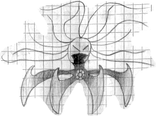 |
Eldor | Big Boss/Eldest | Necklace | Takes extra potent solution to turn her back into a human. Hairs can be used as whips and shields to push things away and throw things. Maybe can penetrate through the player? Maybe also throw the player. These hairs are kind of used as hands and are used to force the player to have a cursed hat so that they can turn into a monster. The blade legs can poke down and smash things. Can cut. Maybe they can be used a shields? Hairs and arms can be animated sprites, then turn into a dozen or so objects when attacking to have better arbitrary movement? Remember, this only appears in the one room, so there shouldn't be any issue with having a ton of objects like this for one "rope" thing. |
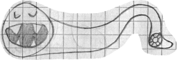 |
Ebbo | Boss/Elder | Sandals | The "foot" part still contains the weak point but is used as a means to push itself around and whip around. The mouth can bite down and do big damage. |
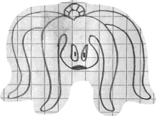 |
Malo-Malo | Boss/Elder | Crown | The legs attack and can be hit to disable the leg. Once all legs are down (maybe change the color when hit to darker or something), the monster falls and the player can jump on top and hit the crystal. After like 3-4 hits (and/or a timer), it launches the player away and gets up. |
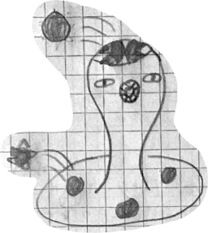 |
Thwop | Boss/Elder | Circlet | Explosive balls get shot out the top towards the player and explode after a few seconds. The mouth bites the player if they try to jump in. Spike balls get shot out from the holes on the bottom and roll towards the player (but don't change trajectory). |
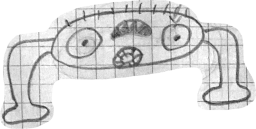 |
Stampo | Boss/Elder | Belt | Hitting its eyes coses them (hitting one closes one, hitting the other can close that one too). Once both eyes are closed, the player can walk under its body to hit the crystal. If the player does not close Stampo's eyes, it will drop its body down on the player to attack, knocking the player away before they can hit the crystal. In the room it is in, there should be platforms so that the player can get over to the other side to attack that eye too. The legs slide around to move. |
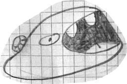 |
King Gloub | Boss/Elder | Sack | The player can jump over it (with jump upgrade) and attack its crystal, but it turns around eventually (slowish). King Gloub is very slow. When King Gloub swallows the player, the player dies instantly. |
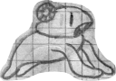 |
Player Monster | Youngo | Hat | The big boss places the hat on the player's head once they get near dead (1 hp). This turns them into a "youngo." |
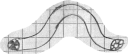 |
Eb | Youngo | Shoes | Like an inchworm. |
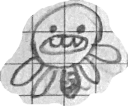 |
Zorb | Youngo | Bracelet | Scurries up to the player and attacks with arm things. |
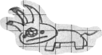 |
Gonk | Youngo | Mask | Charges forward. Maybe when it hits something, its mouth opens, so the way to feed it is to have it ram into the flask and it'll run into it, break it, and then eat it. (Should we make it so you can't jump over it unless you hit it first or get a jump upgrade or something?) |
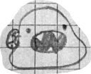 |
Gloub | Youngo | Sack | Jumps and/or slides. Bites do big damage, but they're slow. |
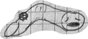 |
Finger | Youngo | Ring | Scoots forwards with nail in front. Cuts with its nail to attack. |
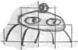 |
Stippo | Gonner | N/A | Can run around, jump, and attack; like jump forward, bite, and jump back sometimes. |
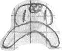 |
Blop | Gonner | N/A | Slow but hits harder than other gonners. Maybe their body kind of goes up and down as it moves and can be annoying to hit because of it. |
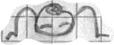 |
Stamper | Gonner | N/A | Walks normal speed and kicks to attack. |
I think one of the best ways to get to know the feel of a game (besides concept art, of course, which I'm pretty bad at right now) is with music, so I've written a few pieces that I can listen to to get a sense of the game. (I've heavilly compressed these audio files because I feel bad for putting large files willy-nilly on GitHub, so I hope I haven't compressed them too much.)
Title Theme:
Camp Theme:
I wrote a few more, but I hope these two give you a sense of what I'm going after, or at least for right now.
I know the GBA can do more than simple audio waves, but I'm not really sure what instruments I want to use right now. I'm thinking it might be nice to take advantage of audio channel 1 and 2's square waves in most of the songs just to make things a little easier, but also I like the square wave :]
I just want to create a simple sprite for the main character, if only to use as a placeholder for now; although, now that I've designed him, I might keep him, I don't know yet.
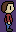
As I started to convert him over to bytes for the game using my OBJ sprite maker, I found things in the tool that I wanted to change/add: being able to remove the gaps and borders between pixels in the editor and being able to right click a pixel to set it to the first palette color (transparent), so I added these features; I'm guessing that I'll be doing a lot of that kind of thing. I'll probably also end up making more tools to help me along the way too.
In setting up the ROM to then display the player, I have to think about how I want the initial state of the game to be; of course, this doesn't have to be permanent and can always also be changed for different scenes in the game too. For now, I think I'll use background mode 0, 1-dimentional OBJ VRAM mapping, and, for now, I'll turn on the OBJ screen (later, I'll turn on some other background screens, but I'll leave that for then): %0001000001000000
For now, I'm just going to place the player idle sprite starting at char 1 and store the player as OBJ 0, but that might change later if I decide if anything should go before the player. I'm also going to set the player palette in palette 0.
So here he is:
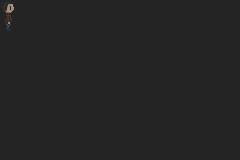
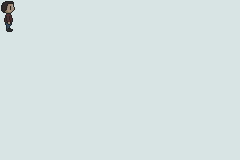
Now that I think about it, I should probably make the sprite a little more vibrant, but I'll do that as I start to design animations later. For now, it'll just feel a bit desaturated.